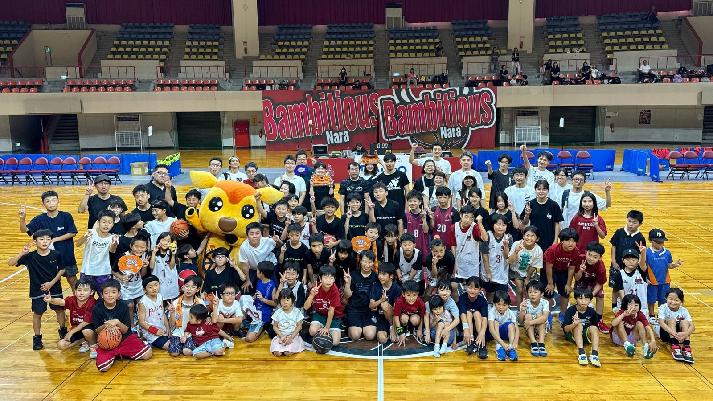

バンビシャス奈良 「バスケの日2026 in 奈良市」開催 —— 奈良市長も参加、約8時間バスケ三昧の一日に
B.LEAGUE・バンビシャス奈良は8月29日（土）、老若男女が入り交じってチームを組み、朝から夕方までバスケットボールを楽しむ「バスケの日2026 in 奈良市」をロートアリーナ奈良で開催したと9月1日発表した。

仲川奈良市長も参加、小学生と保護者が熱戦
開場前から多くの参加者が集まり、アリーナMCのサヒャンとシカッチェによる開会宣言、仲川げん奈良市長の挨拶に続いて、小学生と保護者による午前の部の試合が始まった。低学年と高学年で体格差やテクニックの差はありながらも、全員が全力でプレー。バンビシャス奈良U18の小野龍猛選手も"保護者"としてこの試合に加わり、子どもたちと一緒にバスケを楽しんだという。
フリースロー大会、坂口竜也選手・間山柊選手が参加
午前と午後の部の間には、坂口竜也選手と間山柊選手が参加してのフリースロー大会を実施。小学生の組は決勝で坂口選手と対戦し、8人がバンビシャス奈良のグッズを獲得した。中学生以上の組は間山選手と対決し、坂口選手からの"煽り"を受けながらも間山選手が冷静にシュートを決め、勝ち残った。
中学生以上は8分流しの試合、合計21試合を実施
午後の部では中学生以上を対象に8分流しの試合を行い、序盤の数試合では坂口選手と間山選手がそれぞれのチームのヘッドコーチ役としてマイクを通した応援で盛り上げた。午前・午後を通じて21試合を実施し、合計得点はAチーム368点、Bチーム363点の僅差だった。約8時間にわたるイベントとなり、バンビシャス奈良は来年も同企画の開催に意欲を示している。
出典: 株式会社バンビシャス奈良プレスリリース「【バンビシャス奈良】バスケの日2026 in 奈良市を実施～バスケ三昧の一日～」（PR TIMES・2026年9月1日）
https://prtimes.jp/main/html/rd/p/000000170.000105349.html